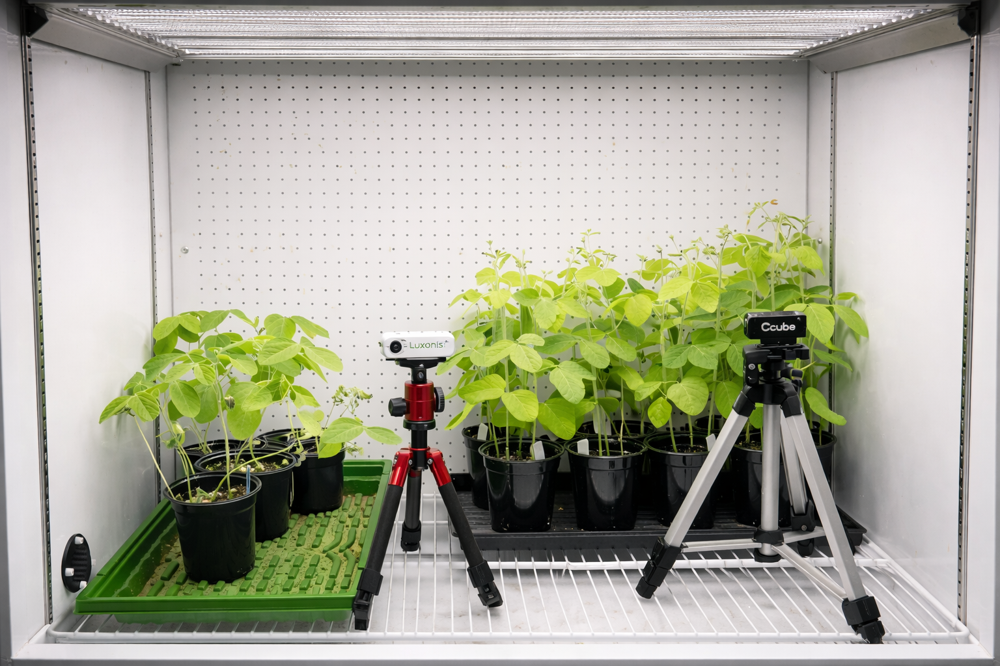

Early Prediction and Temporal Analysis of Growth and Stress for Soybean in Controlled Environments
Learn MoreImaging data sources, data organization, and how the data is collected and stored.
Removing noise, fixing errors, normalizing values, and preparing images for modeling.
Extracting meaningful plant traits and vegetation indices from imaging data.
Building machine learning models to detect plant stress and predict growth traits.
Analyzing plant growth patterns over time to identify early changes and stress signals.
Generating graphs, overlays, reports, and summaries of experimental results.
Astro Cultivators is a collaborative project between the Computer Science, Biology, and Mechanical Engineering departments at California State University, Northridge, under the ARCS (Autonomy Research Center for STEAHM) initiative.
Our data analysis team builds the imaging and analytics pipeline that detects early drought stress in soybean seedlings and links visual features to measurable growth traits. Williams 82 soybean plants are grown in a controlled growth chamber where drought stress is applied by skipping scheduled waterings. Using hyperspectral, RGB, and depth cameras capturing images every 30 minutes, we collect multi-modal data that tracks subtle changes in plant health, often before they become visible to the human eye.
Our pipeline spans six stages: dataset management, data cleaning and preprocessing, feature engineering, predictive modeling, temporal growth analysis, and output visualization. The goal is to enable biologists to identify stressed plants early and make data-driven decisions about crop management, prioritizing high recall so that every stressed plant is caught, even at the cost of some false alarms.
Graduate Researcher, Temporal Growth Analysis
M.S. Computer Science candidate at CSUN and ARCS Research Associate. In Astro Cultivators, she leads temporal growth analysis and serves as the liaison between the biology and data science teams, with thesis research on full life-cycle soybean monitoring under drought stress.
Team Lead, Machine Learning
B.S. Computer Science senior at CSUN, NSF Research Assistant, ARCS Associate, Dean's List honoree, and IEEE-HKN member. In Astro Cultivators, she serves as Research Assistant and Team Lead, coordinating the project and contributing across the full pipeline, from data preprocessing and feature engineering to deep learning model design, evaluation, and visualization.

Data Cleaning & Preprocessing
B.S. Computer Science senior with a Mathematics minor at CSUN, ARCS Associate, published writer, fitness instructor, piano teacher, and math tutor. In Astro Cultivators, she focuses on data cleaning, preprocessing, and organizing multi-sensor imaging data, ensuring quality, consistency, and structure across all datasets for reliable downstream model development, evaluation, and analysis.
Feature Engineering
B.S. Computer Science senior at CSUN, ARCS Associate, Technical Operations Intern and Scrum Master at CSUN Associated Students, and Product and Systems Manager at ETHIX. In Astro Cultivators, she designs and implements end-to-end feature engineering workflows to extract meaningful plant traits from multi-modal imaging data, supporting stress classification, growth analysis, and model development.
Output & Visualization
B.S. Computer Science senior at CSUN, ARCS Associate, and software developer driven by building user-centered digital experiences with expertise in JavaScript, React, Python, Node.js, and cloud infrastructure. In Astro Cultivators, he focuses on output, visualization, and Digital Twin integration, bridging the data analysis pipeline to the Digital Twin system for real-time plant monitoring.
The tools, frameworks, and expertise powering our plant stress detection pipeline.
Core language for data processing, analysis, and model development across the entire pipeline.
Deep learning framework used for training stress detection and trait prediction models.
Object detection model for identifying plant organs such as leaves, pods, and flowers in imaging data.
Image processing and computer vision library for preprocessing, segmentation, and feature extraction.
Data manipulation, numerical computing, and structured analysis of plant trait measurements.
Visualization library for generating growth curves, stress graphs, and analytical charts.
Interactive environment for exploratory analysis, prototyping, and documenting experiments.
Version control and team collaboration with branching workflows and pull request reviews.
RGB and depth camera system for capturing 3D plant structure and height measurements.
Environment and package management for reproducible data science workflows.